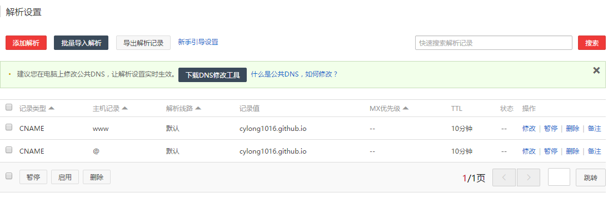

前言
个人博客日益流行，大家都开始搭建自己的博客，记录成长中学习中的点点滴滴，最近觉得自己也需要有一个平台整理自己的所学所想，于是用了将近3天的时间 (实际上一天就能搞定的！) 使用 Hexo + Git 搭建了自己的个人博客，提高自己的学习动力，没事的时候可以拿出来温习下，提高下本人的渣渣水平。目前仍有很多功能没有添加，留着日后慢慢完善。准备将自己的第一篇博客献给 Hexo，表示对 Hexo 的感谢。下面详细介绍下搭建流程，有任何不懂的问题欢迎 联系我 或者在下面评论。另外个人能力有限，接受任何建议或者吐槽！共同进步(●’◡’●)。
Hexo 简介
大家所熟悉的博客框架莫过于 Wordpress，还有 Jekyll 等，博主在查阅了大量资料后选择了Hexo，Hexo 是一个快速、简洁且高效的博客框架。可以方便快捷的生成博客网页。Hexo由台湾大学生 tommy351 开发，是一个基于Node.js的静态博客程序。支持多种主题，博主选择的是 Next 主题。使用 Hexo + Git 搭建博客不需要购买域名和服务器，由 Github 提供域名和网站页面空间。
安装 Hexo
注意: 本文针对 Windows 平台和 Hexo 3.x 【其实后来我也在 Ubuntu 上试了一下，完全一样的】
准备
在安装 Hexo 之前，请确认你已经安装了以下程序：
安装
在自己认为合适的地方创建一个文件夹作为博客项目的目录，进入文件夹，然后鼠标右键选择 Git Bash Here，依次输入：
1 | npm install -g hexo-cli |
输入 hexo -v 后输出以下内容表示安装成功了(可能版本有差别)：
1 | $ hexo -v |
体验 Hexo
接下来在当前的博客目录下，依次输入：
1 | hexo init # 初始化组件 |
之后 npm 将会自动安装你需要的组件，只需要等待 npm 操作即可。接着输入：
1 | hexo s |
输出：
1 | INFO Start processing |
说明你的博客可以在本地访问啦，打开浏览器输入 http://localhost:4000/ 试试看吧~
Hexo 使用
下面让我们创建第一篇文章吧，输入：
1 | hexo n my-first # 生成文章，或者 source\_posts 手动编辑 |
之后查看 source\_posts 下面就会出现 my-first.md， 编辑这个文件就是在编辑你的这篇博客，博客采用 md 文件编写。md 语法请参考：
完成保存后输入：
1 | hexo g # 生成 public 静态文件，这步不是必须的，当你需要生成的 Html 页面的时候输入这行代码 |
浏览器中输入 http://localhost:4000/ 就会看到你刚刚编辑的博客了，如果发现无法访问的情况，可能是因为端口被占用或者你启用了代理【关掉就好】，运行如下命令修改端口：
1 | hexo server -p 5000 # 5000为你想要修改的端口号 |
在服务器启动期间，Hexo 会监视文件变动并自动更新，您无须重启服务器。更多博客编辑技巧请参照 Hexo 中文文档
部署到Github
创建代码仓库
首先你需要一个 Github: https://github.com/ 账号，然后创建一个仓库，仓库名是 yourname.github.io， 比如我的是 cylong1016.github.io。
开启 gh-pages 功能
创建完成后点击界面右侧的 Settings，向下拖动，直到看见 GitHub Pages ，点击 Automatic page generator，Github 将会自动替你创建出一个 gh-pages 的页面。
如果你的配置没有问题，那么大约15分钟之后，http://cylong1016.github.io 这个网址就可以正常访问了~
之后打开本地博客目录下的 _config.yml 文件，最下面找到 Deployment ， 做如下修改：
deploy:
type: git
repo: https://github.com/cylong1016/cylong1016.github.io.git
# cylong1016改成你的用户名
branch: master
接着在 Git Bash 中依次输入：
1 | npm install hexo-deployer-git --save # 安装使用 git 方式进行部署所需要的插件 |
部署会强制覆盖掉你之前生成的页面，在博客的目录下会产生 .deploy_git文件夹，不要删除，否则你的部署记录就会不见。之后就可以通过 http://cylong1016.github.io (cylong1016 替换成你的用户名)访问你的网站啦。在之后的部署时，建议输入以下代码:
1 | hexo clean # 清除之前 public 文件夹的内容 |
更换主题
你可以在 Themes - Hexo 找到你喜欢的主题下载下来，放在博客目录下的 themes 目录下，之后修改 _config.yml 文件：
1 | # Extensions |
Hexo 默认主题是 landscape，我使用的是 Next 主题，也是强烈推荐的，简洁、扁平化主题风格是我最喜欢的。配置使用 Next 主题请参考：
本来想单独写一个博客讲述主题方面的配置，不过这些都有官方文档，写的也都很详细，没必要做文章的搬运工(明明是博主很懒！)。如果有问题欢迎在下面提问(●’◡’●)
使用自己的域名
购买域名
首先你需要一个域名。个人比较推荐 GoDaddy 和 万网，我的域名是在万网买的。【好不容易抢到 cylong.com 这个域名，之前被人注册了，不过在16年2月份的时候就过期了，哈哈哈】
设置 CNAME
在博客目录下的 source 文件夹下，创建一个名称为 CNAME 的文件，内容为你的域名，比如我的是:
1 | www.cylong.com |
注意： CNAME 文件是不带后缀的。另外带 www 和不带 www，虽然用户在访问的时候网页内容是一样的，但是搜索引擎却认为是两个网页，最好自己选择一个首选域。更多详情请参考：网站首选域
域名解析
简单来说就是让你的网站和你购买的域名对应起来。万网提供免费的 DNS 解析服务。也可以使用 DNSPod 的服务，但是要在域名注册商修改 DNS 服务地址为：
f1g1ns1.dnspod.net
f1g1ns2.dnspod.net
我在万网购买的域名，所以直接进行解析配置【默认使用万网的 DNS 解析服务，没有使用 DNSPod 的服务】。配置过程如下：
- 登陆 万网。
- 点击最上面的
管理控制台，再点击左侧的云解析。或者直接点击首页查询域名框下面的常用链接：域名解析。 - 选择你要解析的域名，点击域名后面的
解析。 - 解析配置如下【看不清图片可以点击放大】：

设置解析后大约几分钟就可以通过你的域名访问你的网站啦，如果你修改了 DNS 服务器，解析一般最长需要48小时生效。耐心等待吧~
感谢
Xuanwo’s Blog - 史上最详细的 Hexo 博客搭建图文教程
HelloDog - 使用 GitHub 和 Hexo 搭建免费静态Blog
潇潇 - 搭建 hexo 部署到 github 图文教程
参考资料
文章标题：Hexo + Git 搭建免费的个人博客
文章作者：cylong
文章链接：http://www.cylong.com/blog/2016/04/19/hexo-git/
有问题或者建议欢迎在下方评论。欢迎转载、引用，但希望标明出处，感激不尽(●’◡’●)